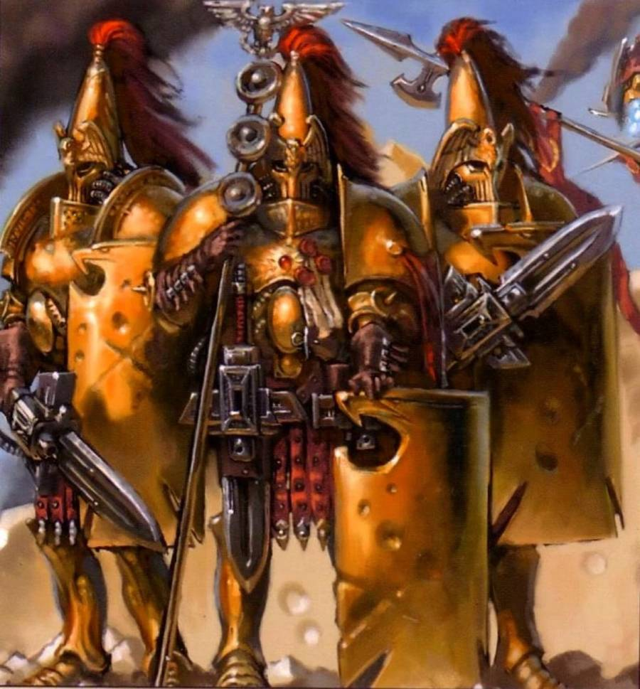
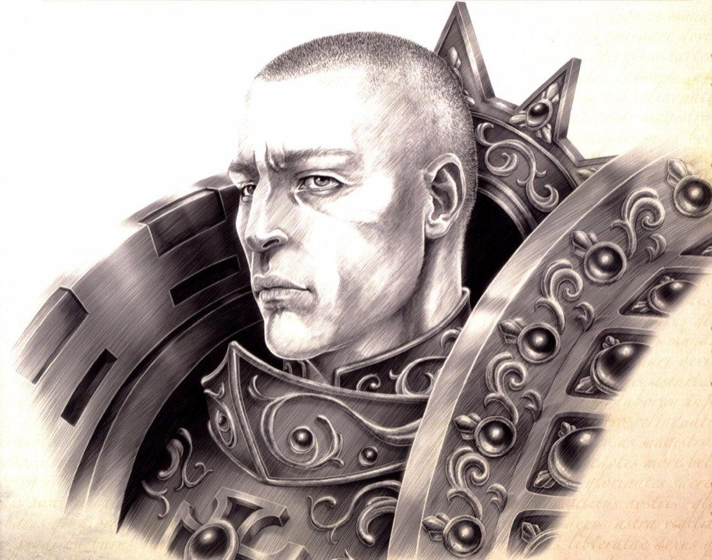

Adeptus Custodes
| Adeptus Custodes | |
|---|---|
| Legio Custodes, the Custodian Guard | |
Sigil of the Adeptus Custodes Artwork © Games Workshop | |
| Founded | Late M29, in the Unification Wars, by the Emperor of Mankind[a] |
| Founder | Constantin Valdor, first Captain-General |
| Current leader | Captain-General Trajann Valoris |
| Allegiance | The Emperor of Mankind |
| Seat | Imperial Palace, Terra |
| Size | Ten thousand at the height of the Great Crusade; far fewer today[b] |
| Role | Guard of the Emperor and the Palace; emissaries and warriors of last resort |
| Wargear | Auramite armour, guardian spear, sentinel blade, misericordia |
The Adeptus Custodes, formerly the Legio Custodes and also called the Custodian Guard, are the bodyguard of the Emperor of Mankind. They are warriors of great size, speed and strength, created by the Emperor himself from his own genetic knowledge, and they serve as the Emperor's guard, his emissaries and his last line of defence. They are far fewer than the Legions of the Adeptus Astartes, but each is the equal or superior of a Space Marine, and they are considered among the most dangerous warriors in the Imperium.[1]
The Custodes have guarded the Emperor from the Unification to the present day. During the Horus Heresy they were at the heart of the defence of Terra and went with the Emperor to the final duel against Horus. They stand watch at the Golden Throne, where the Sisters of Silence serve beside them.[2]
History
[edit]Foundation
[edit]The Emperor created the Custodes before he created the Space Marines, during the Unification Wars of the late 29th and early 30th millennia; they were in the field by the time the first Space Marines appeared in about 700.M30.[c] They were made from the best of the people of Terra, tested and altered with the Emperor's own genetic and psychic craft. They were taller and stronger than the Legions that later followed, and their making demanded a vast investment of the Emperor's time and attention. The first and greatest of them was Constantin Valdor, whom the Emperor named Captain-General.[3]
The Custodes were intended as the Emperor's personal guard, not an army. Their number was small, and each was trained for a lifetime. They accompanied the Emperor wherever he went, including on the early campaigns of the Great Crusade, and they ran the Palace's day-to-day affairs. When the Emperor founded the Imperium, Valdor and his Custodes became its first line of defence.[3]
Great Crusade
[edit]
During the Great Crusade the Custodes served as the Emperor's household and bodyguard. They also took on the secret tasks that the Emperor did not entrust to the Legions, among them diplomatic missions, the investigation of threats to the Palace and, from 000.M31, the guarding of the Emperor's work in the Webway. They were seldom seen outside Terra, and, with the exception of Valdor, rarely spoke of their business.[4]
Relations between the Custodes and the primarchs were cool. The primarchs, who were the Emperor's sons, regarded the Custodes as servants of the Emperor's secrecy. The Custodes regarded the primarchs as untried and, in some cases, unreliable. This mistrust was one of the quiet currents of the Great Crusade, and it hardened in the years before the Heresy.[2]
Horus Heresy
[edit]In the Heresy the Custodes became the core of the Palace's defence. From 004.M31 they fought the Webway War beneath the Palace, and in 014.M31 they held the inner Palace in the Siege of Terra. Under Valdor they held the inner Palace, fought beside the Imperial Fists and the Blood Angels and bore the heaviest losses of any force on Terra. When Horus fell, the Custodes went with the Emperor to the Vengeful Spirit and were present at the end. They carried the wounded Emperor back to the Palace and, with the Sisters of Silence, have not left him since.[2]
The Custodes lost many of their number in the siege and have never regained their earlier strength. The Emperor's work in making them was not repeated, and the knowledge that made it possible is held by the Custodes alone. Valdor, in the sealed records, expressed his anger at the Emperor's decision to place his trust in the primarchs. His later fate is recorded only as a matter of the Custodes' own affairs.[2]
The long watch
[edit]For ten thousand years the Custodes have remained on Terra. They rarely left the Palace and, until the Era Indomitus, took no public part in the affairs of the Imperium. Their absence was, to many, a source of rumour; their presence in the Throne Room, a fixed point of Imperial belief. In 999.M41, with the fall of Cadia and the Great Rift, the Custodes began to leave Terra in greater numbers, sending emissaries and shield hosts to the Imperium's fronts. According to the Office of the Lord Commander they have since taken part in the Indomitus Crusade and in the campaigns against the awakened Necrons of the Pariah Nexus.[5]
Organisation
[edit]
The Custodes are led by the Captain-General, who answers to the Emperor alone. The Captain-General named in the records of the Era Indomitus is Trajann Valoris, in office by 999.M41, who has overseen the Custodes' greater involvement in the Imperium's affairs since the Era Indomitus. Beneath him are the Custodians, who are organised in orders and hosts.[1]
- The Shield Hosts are the Custodes' fighting formations, each commanded by a Shield-Captain. Among them are the Solar Watch, the Emissaries Imperatus and the Shadowkeepers.
- The Dread Host is a formation of Custodian veterans entombed in Contemptor-Achillus dreadnoughts.
- The Emissaries Imperatus are diplomats and agents who carry the Emperor's will to the Imperium's lords.
- The Sisters of Silence, though not Custodes, serve with them as watchers over the Throne and the Palace.
Powers and equipment
[edit]A Custodian is larger than a Space Marine, and he has been shaped by the Emperor to be stronger, faster and more durable than any other human warrior. Each carries a guardian spear, which is both a long blade and a bolt-weapon, or a sentinel blade and shield. They wear armour of auramite, a golden alloy, and fight in the Emperor's name with no regard for their lives. The Custodes also have a number of vehicles, of which the best known are the Caladius grav-tanks and the Allarus Terminators, and are served by the Adeptus Mechanicus on request.[1]
The Custodes receive a form of training that has been described as the most demanding in the Imperium. They are tested in the Palace's arenas against each other and against the Emperor's other warriors, and their dedication is believed to be absolute. They are also believed to be endowed with a measure of immunity to the Warp, a trait the Chaos Gods are said to have feared.[2]
Relations with others
[edit]The Custodes' relations with the other institutions of the Imperium are formal and distant. The Adeptus Astartes respect them as the Emperor's own, and the Inquisition works with them on matters that concern the Palace. The High Lords of Terra have limited authority over them, and the Captain-General answers to the Emperor, not to the High Lords. Roboute Guilliman has, since his return, worked in closer concert with them than any Lord Commander before him.[5]
Timeline
[edit]| Date | Event |
|---|---|
| Late M29 | The first Custodians are made; Constantin Valdor named Captain-General. They fight in the Unification Wars.[d] |
| c. 700–712.M30 | The Custodes carry out the culling of the Thunder Warriors; Valdor kills Ushotan in the Palace coup. |
| 712.M30 | The Unification of Terra completed. |
| 798.M30 | The Custodes accompany the Emperor on the early Great Crusade. |
| 000.M31 | The Emperor returns to Terra after Ullanor; the Custodes guard the Imperial Webway project. |
| 001.M31 | Valdor stands guard at the Council of Nikaea. |
| 004.M31 | Custodians accompany the Space Wolves to Prospero; the Webway War begins beneath the Imperial Palace. |
| 014.M31 | Siege of Terra: the Custodes hold the inner Palace and go with the Emperor to the Vengeful Spirit; the Emperor is placed on the Golden Throne. |
| 014.M31–M41 | The long watch over the Throne with the Sisters of Silence. |
| 999.M41 | After the Fall of Cadia and the Great Rift, Trajann Valoris sends shield hosts beyond Terra; the Custodes join the Indomitus Crusade. |
See also
[edit]Notes
[edit]- ^ Date estimated from the sequence of events.
- ^ The strength of the Custodes is a closely guarded matter. Pre-Heresy records give ten thousand. Imperial estimates of the present strength differ widely, from a few thousand downward, and the Custodes have never confirmed any figure.
- ^ Date estimated from the sequence of events.
- ^ Date estimated from the sequence of events.
References
[edit]- ^ a b c Codex: Adeptus Custodes (10th Edition), pp. 14-15. Games Workshop. Codex: Adeptus Custodes (9th Edition), pp. 7, 11, 24. Games Workshop.
- ^ a b c d e Wraight, Chris. Vaults of Terra: The Carrion Throne (novel). Black Library. Wraight, Chris. Watchers of the Throne - The Emperor's Legion (novel). Black Library.
- ^ a b Haley, Guy. Wolfsbane (novel). Black Library, Chs. 6-9, 15-27. Haley, Guy. Dark Imperium (novel). Black Library, pp. 61-62, 66-68, 152, 234, 263-264, 268-269, 273, 275, 277.
- ^ Codex Adeptus Astartes - Space Marines (8th Edition), pg. 20. Games Workshop. Codex: Adeptus Custodes (8th Edition), pp. 6-43. Games Workshop.
- ^ a b Warhammer 40,000: Rulebook (8th Edition), pp. 27, 50-51, 53, 79, 90, 278. Games Workshop. McNeill, Graham. A Thousand Sons (novel). Black Library.